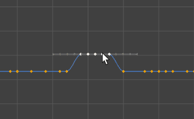

- 在曲线图编辑器(Graph Editor)或摄影表编辑器(Dope Sheet Editor)中，选择“编辑 > 变换工具 > 移动关键帧工具”(Edit > Transformation Tools > Move Keys Tool)
 ，以操纵关键帧组（按比例或相对于选定关键帧）。
，以操纵关键帧组（按比例或相对于选定关键帧）。
注： 仅当“曲线图编辑器”(Graph Editor)或“摄影表编辑器”(Dope Sheet Editor)为活动窗口时，“移动工具”(Move Tool)的“移动关键帧选项”(Move Key options)才可用。若要将焦点放在“曲线图编辑器”(Graph Editor)或“摄影表编辑器”(Dope Sheet Editor)的“移动关键帧选项”(Move Key options)上，请单击“曲线图编辑器”(Graph Editor)或“摄影表编辑器”(Dope Sheet Editor)窗口。
提示： 若要将关键帧一次移动一帧，可按 Shift + 9 将其向左移动，按 Shift + 0 将其向右移动。
在“曲线图编辑器”(Graph Editor)中禁用单击编辑工作流
- 在“动画”(Animation)首选项（在“设置”(Settings)下）中，禁用“按住鼠标左键并拖动可移动选定关键帧”(Left-dragging moves selected keys)。
- 在“曲线图编辑器”(Graph Editor)工具栏上，单击“移动最近拾取的关键帧工具”(Move Nearest Picked Key Tool) ，以使用鼠标中键显式移动关键帧。
注： 此选项不适用于“摄影表编辑器”(Dope Sheet Editor)。
注：
- “移动最近拾取的关键帧工具”(Move Nearest Picked Key Tool) 可以在“曲线图编辑器”(Graph Editor)工具栏和“摄影表”(Dope Sheet)的“编辑”(Edit)菜单的“变换工具”(Transformation Tools)中使用。
- 您还可以使用“动画”(Animation)首选项（在“设置”(Settings)下）中的“使用恒定衰减(移动和缩放除外)”(Use Constant Falloff except for Move and Scale)选项，设置“曲线图编辑器”(Graph Editor)的“移动关键帧工具”(Move Keys Tool)的“指数”(Exponential)衰减设置是否应用于移动和旋转关键帧，而非仅应用于关键帧平移（默认设置）。
- 移动选项(Move Option)
- 从下列选项中选择：
-
仅移动(Move Only)
禁用工具扫描整个曲线关键帧的能力（请参见“移过”(Move Over)）。
“曲线图编辑器”(Graph Editor)和“摄影表”(Dope Sheet)的“仅移动”(Move Only)选项
-
移过(Move Over)
让工具沿曲线的关键帧扫描活动曲线。这样可加快动画曲线的精细调整。该设置为默认设置。
“曲线图编辑器”(Graph Editor)和“摄影表”(Dope Sheet)的“移过”(Move Over)选项
-
涟漪(Ripple) 会按与移动相同的量将关键帧推动到选择内容之后，使关键帧进行调整以保持同步。
“曲线图编辑器”(Graph Editor)和“摄影表”(Dope Sheet)的“涟漪”(Ripple)选项
-
- 移动衰减(Move Falloff)
-
注： “移动衰减”(Move falloff)仅在“曲线图编辑器”(Graph Editor)的“移动选项”(Move Options)中可用。
- 设置下列选项之一：
-
恒定(Constant)
在拖动方向上以相同的量移动所有关键帧。 -
线性(Linear)
根据关键帧距鼠标按下位置的距离移动所有关键帧。关键帧的移动量将随关键帧距鼠标按下位置的距离的增加而呈线性减少。 -
指数(Exponential)
根据关键帧距鼠标按下位置的距离的平方移动所有关键帧。关键帧的移动量将随关键帧距鼠标按下位置的距离的增加时而呈指数减少。
-